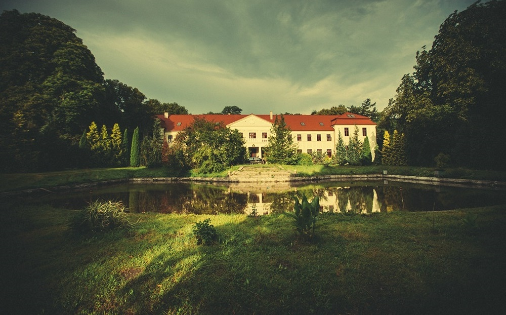

13 lipca 2024, godz. 16:00.
Pokoje dla osób nocujących w Pałacu będą dostępne od godziny 12:00.
Pałac Grąbkowo, Grąbkowo 41, gmina Potęgowo
Jest szansa, że Mapy Google zaproponują Wam skręcić z DK 6 w polną drogę – odradzamy ją!
Zamiast tego kontynuujcie dalej DK 6 jeszcze 1,5 km, a następnie ostro skręćcie w prawo.
Kliknij aby wyświetlić pomocną grafikę.
Pałac w Grąbkowie to oryginalnie zachowany przykład pomorskiej architektury rezydencjalnej położony w Dolinie Łupawy. Od średniowiecza był gniazdem rodu von Grumbkow, a w czasach nowożytnych – siedzibą znanych rodów pomorskich: von Boehn, Zitzewitz, Massow i Puttkammer. Na przełomie XVIII i XIX wieku stał się własnością Gebharda Leberecht von Blucher – pogromcy Napoleona pod Vaterloo. Obecna forma pałacu powstała w latach 1921/1922 w wyniku przebudowy XIX-wiecznych zabudowań. Otrzymał wtedy formę nawiązującą do stylu neobarokowego z amfiladą sal, w tym wysoką na 8 metrów Salą Kominkową. Po II Wojnie Światowej użytkowany jako biura i mieszkania pracowników PGR, a w latach 90. uległ całkowitej dewastacji.
Pod koniec lat 90. pałac został zakupiony przez obecnych gospodarzy i poddany koompleksowym pracom renowacyjnym i konserwatorskim, które trwały do 2010r. Od wielu lat gospodarze użytkują budynki i otoczenie w sposób zbliżony do pierwotnego przeznaczenia. Prowadzą gospodarstwo rolne specjalizujące się w produkcji zbóż. Gospodyni jest architektką, specjalizującą się w odnawianiu pomorskiej architektury zabytkowej. Pasją gospodarza jest łowiectwo oraz pszczelarstwo.
Ślub odbędzie się w malowniczym pałacowym ogrodzie, bawić będziemy się wspólnie we wspomnianej amfiladzie sal, a pałacowa kuchnia przygotuje dania regionalne z lokalnych produktów.
{kind=link}